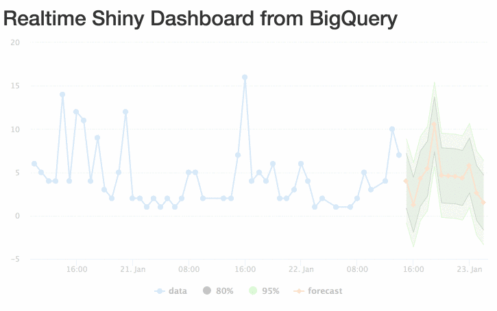

In part two of this two part series we walk through the steps to stream data from a Google Tag Manager (GTM) implementation into a Google App Engine (GAE) web app, which then adds data to a BigQuery table via BigQuery’s data streaming capability. In part two, we go into how to query that table in realtime from R, make a forecast using R, then visualise it in Shiny and the JavaScript visualisation library Highcharts.
Read part one here.
The project combines several languages where their advantages lie: Python for its interaction with Google APIs and its quick start creating your own API on App Engine, SQL to query the BigQuery data itself, R for its forecasting libraries and the reactive Shiny framework, and JavaScript for the visualisation and data capture at the Google Tag Manager end.
Thanks
This project wouldn’t have been possible without the help of the excellent work gone beforehand by Luke Cempre’s post on AnalyticsPros for streaming data from Google Tag Manager to BigQuery, and Joshua Kunst for his help with the Highcharts JavaScript.
Data flows
There are two data flows in this project. The first adds data to BigQuery:
- GTM collects data into its dataLayer from a web visit.
- A custom HTML tag in GTM collects the data you want to stream then calls an App Engine URL with its data payload.
- The app engine URL is sent to a queue to add the data to BigQuery.
- The data plus a timestamp is put into a BigQuery row.
Then to read the data:
- The Shiny app calls Big Query every X seconds.
- The data is aggregated
- A forecast is made with the updated data.
- The Highcharts visualisation reads the changing dataset, and updates the visualisation.
This blog will cover the second. A demo Github repo for the Shiny app is available here.
Calling data: your options
The Google App Engine app on Github includes functions to both read and write data from BigQuery. You can either call the data via the app engine app, which in turn reads the data via the Python BigQuery library, or if you are using a platform that supports reading the data from BigQuery then you can use that directly.
In most cases, you will be better off with the latter, as you will be cutting out the middle man. In some cases the app engine will time out so if you are using it you should make sure your app can handle null results. But it is useful to have, for those platforms that do not have Big query SDKs, such as some visualisation BI tools.
Option 1 - Google App Engine: Reading realtime data from BigQuery
The full code for reading and writing data is available at the supporting Github repo here.
The first blog in this series went through its data input, we now look at the data output. In production this may be separated out into a different app, but for brevity its here in the same application.
We first define some environmental variables in the app.yaml setup file, with the dataset and table and a secret code word:
#[START env]
env_variables:
DATASET_ID: tests
TABLE_ID: realtime_markedmondsonme
SECRET_SALT: change_this_to_something_unique
#[END env]
The first function below then queries the BigQuery table we defined in the environmental variables, and turns it into JSON. By default it will get the last row, or you can pass in the limit argument to get more rows, or your own q argument with custom SQL to query the table directly:
# queries and turns into JSON
def get_data(q, limit = 1):
datasetId = os.environ['DATASET_ID']
tableId = os.environ['TABLE_ID']
if len(q) > 0:
query = q % (datasetId, tableId)
else:
query = 'SELECT * FROM %s.%s ORDER BY ts DESC LIMIT %s' % (datasetId, tableId, limit)
bqdata = sync_query(query)
return json.dumps(bqdata)
This next class is called when the “get data” URL is requested. A lot of headers are set to ensure no browser caching is done which we don’t want since this is a realtime feed.
For security, we also test via a hash parameter to make sure its an authorised request, and decide how much data to return via the limit parameter.
Finally we call the function above and write that out to the URL response.
class QueryTable(webapp2.RequestHandler):
def get(self):
# no caching
self.response.headers.add_header("Access-Control-Allow-Origin", "*")
self.response.headers.add_header("Pragma", "no-cache")
self.response.headers.add_header("Cache-Control", "no-cache, no-store, must-revalidate, pre-check=0, post-check=0")
self.response.headers.add_header("Expires", "Thu, 01 Dec 1994 16:00:00")
self.response.headers.add_header("Content-Type", "application/json")
q = cgi.escape(self.request.get("q"))
myhash = cgi.escape(self.request.get("hash"))
limit = cgi.escape(self.request.get("limit"))
salt = os.environ['SECRET_SALT']
test = hashlib.sha224(q+salt).hexdigest()
if(test != myhash):
logging.debug('Expected hash: {}'.format(test))
logging.error("Incorrect hash")
return
if len(limit) == 0:
limit = 1
self.response.out.write(get_data(q, limit))
To find the hash, you can run this line and copy the result:
q = "" # change to the query you use directly if you donøt use the default
salt = os.environ['SECRET_SALT'] # the secret passphrase
test = hashlib.sha224(q+salt).hexdigest()
…or easier is to just run one call, then check the logs for the hash in the debug messages:

Full App Engine Script
The full script uploaded is available in the Github repository here: main.py
With this script you then need some configuration files for the app and upload it to your Google Project. A guide on how to deploy this is and more is available from the Github repository README, but once done the app will be available at https://YOUR-PROJECT-ID.appspot.com and you will call the /bq-streamer and /bq-get URLs to send and get data.
Option 2 - Calling BigQuery directly
This is the preferred method, as it will be on average 5-10 seconds quicker to get your results, and avoid timeouts.
I’m using Shiny as it fits into existing work, but you may prefer to use some of the other BigQuery SDKs out there. I’ll be using Github version of bigQueryR > 0.2.0.9000 as it has support for non-cached queries that are needed to see the tables update in realtime.
A demo Github repo for the Shiny app is available here.
In this case, the function in R that is in the Shiny server.R is below:
library(bigQueryR)
do_bq <- function(limit){
## authenticate offline first, upload the .httr-oauth token
bqr_auth()
q <- sprintf("SELECT * FROM [big-query-r:tests.realtime_markedmondsonme] ORDER BY ts DESC LIMIT %s",
limit)
bqr_query(projectId = "big-query-r",
datasetId = "tests",
query = q,
useQueryCache = FALSE)
}
The bqr_auth() if first run offline to generate the authentication token, which is then uploaded with the app. Alternatively you can use the JSON service auth or if deploying on Google Compute Engine the automatic Google Cloud auth features of googleAuthR (googleAuthR::gar_gce_auth())
The query itself selects all the columns, and orders by the timestamp we supplied in the input post. The function has a parameter so you can select how many rows to collect, which we use later.
Note the use of useQueryCache = FALSE to ensure you always get the freshest results. If this wasn’t selected queries of the same type will return the first result they queried, which is no good for these purposes.
reactivePoll - the Shiny realtime function
For realtime applications, shiny::reactivePoll() is a function that periodically checks a datasource for changes.
Now, what constitutes “realtime” is debatable here - for my applications I really only need an update every ~30 seconds. Practically the Shiny output dims when updating with data, so for periods less than say 10 seconds it may not be the best approach for you - updating directly via JavaScript libraries may be better, and rely on say OpenCPU to provide the forecasting or another JS library.
However, for my purposes I just need something better than the Google Analytics 4-hour lag in data (for GA360) and this suits well, particularly as you can apply a whole host of R data functions to the output.
reactivePoll needs to be supplied with two functions: one to check if the data has changed, the other to make the complete fetch once a change is detected. For these we just check if the timestamp of the last entry has changed, and if so, then fetch the last 1000 results to make the prediction:
## get 1000 rows of data
get_bq <- function(){
message("Getting new data...")
check <- do_bq(1000)
rt <- as.data.frame(check, stringsAsFactors = FALSE)
names(rt) <- c("pageURL","Referrer","ts")
## turn string into JS timestamp
rt$timestamp <- as.POSIXct(as.numeric(as.character(rt$ts)), origin="1970-01-01")
rt
}
## get 1 row of data, output its timestamp
check_bq <- function(){
check <- do_bq(1)
message("Checking....check$ts: ", check$ts)
check$ts
}
This is then called in the Shiny server function like so, in this case every 5 seconds:
shinyServer(function(input, output, session) {
## checks every 5 seconds for changes
realtime_data <- reactivePoll(5000,
session,
checkFunc = check_bq,
valueFunc = get_bq)
### ... do stuff with realtime_data() ...
}
Transforming data
We then need to make the forecast, and put the data into the correct format it can be used in the chosen visualisation library, highcharter.
The next function takes the output of the realtime_data() function, aggregates per hour (my lowly blog hasn’t enough data to make it worth doing per minute, but YNMV), turns the aggregation into time series objects suitable for the forecast and highcharts functions, then outputs a list.
In this case I have chosen a very simple forecast function using all the defaults of forecast::forecast() but this should be tweaked to your particular use cases, such as taking more account of seasonality and so forth.
transform_rt <- function(rt){
## aggregate per hour
rt_agg <- rt %>%
mutate(hour = format(timestamp, format = "%Y-%m-%d %H:00")) %>%
count(hour)
rt_agg$hour <- as.POSIXct(rt_agg$hour, origin="1970-01-01")
# ## the number of hits per timestamp
rt_xts <- xts::xts(rt_agg$n, frequency = 24, order.by = rt_agg$hour)
rt_ts <- ts(rt_agg$n, frequency = 24)
list(forecast = forecast::forecast(rt_ts, h = 12),
xts = rt_xts)
}
All that remains now is to apply this transformation to new data as it appears (e.g. for each new visit, the hourly aggregate for the last hour increases, and the forecast updates)
plot_data <- reactive({
req(realtime_data())
rt <- realtime_data()
message("plot_data()")
## aggregate
transform_rt(rt)
})
Output to Highcharts
The final output to Highcharts has been tweaked a bit to get the prediction intervals and so forth:
output$hc <- renderHighchart({
req(plot_data())
## forcast values object
fc <- plot_data()$forecast
## original data
raw_data <- plot_data()$xts
# plot last 48 hrs only, although forecast accounts for all data
raw_data <- tail(raw_data, 48)
raw_x_date <- as.numeric(index(raw_data)) * 1000
## start time in JS time
forecast_x_start <- as.numeric(index(raw_data)[length(raw_data)])*1000
## each hour after that in seconds,
forecast_x_sequence <- seq(3600000, by = 3600000, length.out = 12)
## everything * 1000 to get to Javascript time
forecast_times <- as.numeric(forecast_x_start + forecast_x_sequence)
forecast_values <- as.numeric(fc$mean)
hc <- highchart() %>%
hc_chart(zoomType = "x") %>%
hc_xAxis(type = "datetime") %>%
hc_add_series(type = "line",
name = "data",
data = list_parse2(data.frame(date = raw_x_date,
value = raw_data))) %>%
hc_add_series(type = "arearange",
name = "80%",
fillOpacity = 0.3,
data = list_parse2(data.frame(date = forecast_times,
upper = as.numeric(fc$upper[,1]),
lower = as.numeric(fc$lower[,1])))) %>%
hc_add_series(type = "arearange",
name = "95%",
fillOpacity = 0.3,
data = list_parse2(data.frame(date = forecast_times,
upper = as.numeric(fc$upper[,2]),
lower = as.numeric(fc$lower[,2])))) %>%
hc_add_series(type = "line",
name = "forecast",
data = list_parse2(data.frame(date = forecast_times,
value = forecast_values)))
hc
})
This can then be displayed now in a very simple ui.R:
library(shiny)
library(highcharter)
shinyUI(fluidPage(
titlePanel("Realtime Shiny Dashboard from BigQuery"),
highchartOutput("hc")
)
)
…to be tweaked and put into a template as needed.
The gif doesn’t quite do it justice, but you get the idea:

Improvements
Ideally I’d like to avoid the Shiny grey-out when new data is fetched and the graph redraw - I fiddled a bit trying to get the JavaScript to take data from an R table and pull it in directly put that didn’t work out - I may update it if its figured out later.
However, as I said above for my application I needed an update only every 60 seconds so it wasn’t worth too much trouble over. But if say you needed (and who really needs this?) a smooth update every 5 seconds, the grey out would be too often to be useable.
Summary
The full app then can be tested easily as its realtime :-)
As I visit my blog it sends data from Google Tag Manager to BigQuery; that tables is queried every 5 seconds from the Shiny app to see if any new visits have occured; if they have the full data set is downloaded; a new forecast is made and output to the Highcharts.
Whatever your application, the biggest thing I got from trying this project was it was a lot easier than I expected, which I credit the BigQuery platform for, so give it a go and let me know how it goes for you. Improve on the base I have made here, and I’d be really interested in the applications beyond reporting you may use it for - real time traffic predictions that modify bids being one example.